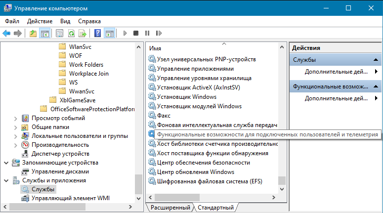
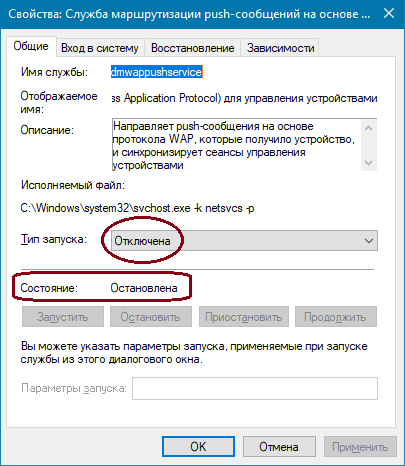

Если включение компьютера с установленной операционной системой Windows 10 происходит медленно, возможно, что затрудняет загрузку служба телеметрии. Эта служба, используя термин "телеметрия", мимикрирует под что-то важное, но на самом деле является одной из подсистем слежки за пользователем.
В момент после логина пользователя можно быстро открыть диспетчер задачь, отсортировать процессы по проценту использования CPU, и увидеть, что служба что-то-там-telemetry-... выжирает все ресурсы процессорных ядер. До какого-то момента компания Microsoft запрещала отключать эту службу (служба просто не отключалась), но потом, чтобы избежать репутационных издержек, Microsoft изменила свое решение, и служба телеметрии теперь управляется так же как и обычные службы Windows.
Отключение телеметрии
Для отключения телеметрии в Windows 10, естественно, потребуются права Администратора. Под пользователем, имеющим права Администратора, необходимо запустить приложение "Управление компьютером".
В нем нужно открыть ветку Службы и приложения - Службы, и отключить две службы:

Нужно отключить и запуск службы, и
